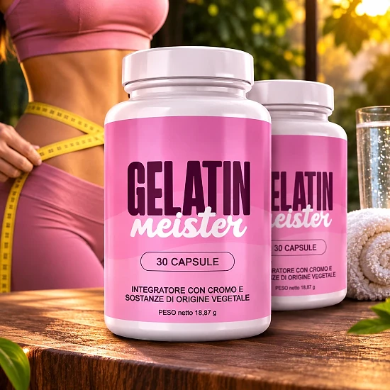
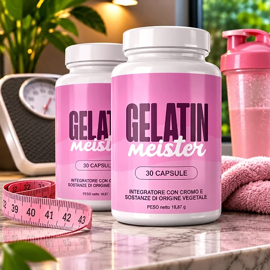

Che cos’è Gelatin Meister e come agisce?
Gelatin Meister è un integratore alimentare in capsule che il sito ufficiale presenta come una miscela dimagrante naturale. È pensato per accompagnare la gestione del peso, il metabolismo e il controllo dell’appetito, all’interno di un’alimentazione equilibrata e di un’attività fisica regolare.
Nonostante il nome, la formula non contiene gelatina in polvere: l’etichetta italiana lo descrive come un «integratore con cromo e sostanze di origine vegetale». Ogni flacone contiene 30 capsule, cioè un mese di utilizzo con una capsula al giorno, per un peso netto di 17,01 g.
La formula riunisce 11 ingredienti: cromo, estratto di tè verde, aceto di mele, berberina, zenzero, cannella cassia, arancio amaro, peperoncino di Cayenna, foglie di banaba, ginseng coreano e resveratrolo. Secondo il sito, ogni ingrediente è stato selezionato e dosato con cura per favorirne l’assorbimento.
Come agisce? Il sito ufficiale ricorda che il cromo contribuisce al normale metabolismo dei macronutrienti. Gli estratti vegetali come il tè verde, la Cayenna e l’arancio amaro vengono descritti come ingredienti legati al metabolismo, mentre lo zenzero, la cannella e la berberina sono messi in evidenza per una digestione leggera.
L’approccio è graduale. Secondo il sito ufficiale, i primi cambiamenti, come meno voglia di dolci e una digestione più leggera, compaiono di solito dopo due o tre settimane, e il marchio consiglia un’assunzione di almeno 90 giorni per un supporto ottimale.
L’etichetta indica che il prodotto è distribuito nell’Unione europea da Digistore24 MSLW Limited, a Dublino, con un indirizzo per i resi nei Paesi Bassi.
Gelatin Meister resta un integratore alimentare: non è destinato a diagnosticare, trattare, curare o prevenire alcuna malattia e non sostituisce un’alimentazione varia né uno stile di vita sano. Il sito ufficiale precisa che i risultati possono variare da persona a persona.
Gelatin Meister – Ingredienti
La tabella dei valori nutrizionali di Gelatin Meister indica la dose di ogni ingrediente per capsula. Ecco la composizione riportata sull’etichetta italiana e sul sito ufficiale:
Cromo, come cromo picolinato (100 µg, 250% del VNR): contribuisce al normale metabolismo dei macronutrienti.
Estratto di foglie di tè verde (154 mg): pianta ricca di catechine, che il sito collega alla termogenesi.
Aceto di mele (150 mg): indicato dal marchio per la digestione e il controllo dell’appetito.
Berberina cloridrato (85 mg): composto vegetale della tradizione erboristica.
Radice di zenzero (50 mg) e corteccia di cannella cassia (20 mg): spezie usate tradizionalmente per il benessere digestivo.
Arancio amaro (20 mg), Cayenna (20 mg), foglie di banaba (5 mg), ginseng coreano (5 mg) e resveratrolo (1 mg): estratti vegetali che completano la formula.
L’arancio amaro è una fonte naturale di sinefrina, e il resveratrolo deriva da un estratto di radice di poligono del Giappone (Polygonum cuspidatum).
Gli altri componenti sono la capsula vegetale (ipromellosa), la cellulosa microcristallina e gli agenti antiagglomeranti. Solo il cromo ha un valore nutrizionale di riferimento: per gli estratti vegetali l’etichetta precisa che non è stato stabilito alcun VNR.
Gelatin Meister – Effetti collaterali
Secondo il sito ufficiale, Gelatin Meister è formulato con ingredienti naturali ed è ben tollerato dalla maggior parte delle persone. Gli effetti collaterali vengono descritti come rari e di norma lievi, per esempio piccole modifiche digestive nei primi giorni di adattamento.
La formula contiene comunque ingredienti attivi, come l’estratto di tè verde, l’arancio amaro e il peperoncino di Cayenna, ai quali alcune persone possono essere sensibili. Non bisogna superare la dose raccomandata, e l’etichetta indica che il prodotto non è adatto a chi ha meno di 18 anni, né alle donne in gravidanza o allattamento.
L’etichetta contiene un’avvertenza specifica: chi soffre di diabete o ipoglicemia, così come chi assume farmaci, deve consultare un medico prima dell’uso. Le domande frequenti del sito citano in particolare il diabete, l’ipertensione e i fluidificanti del sangue, e consigliano un intervallo di almeno due ore tra l’integratore e altri farmaci.
Non utilizzare il prodotto se il sigillo di sicurezza è danneggiato o mancante. In caso di fastidi o reazioni insolite, conviene interrompere l’assunzione e chiedere consiglio a un professionista della salute, mostrandogli l’etichetta del prodotto. Le reazioni variano da persona a persona, e un parere professionale resta sempre il riferimento più sicuro.
Gelatin Meister – Posologia
L’etichetta è chiara: gli adulti assumono una (1) capsula al giorno. La pagina di vendita consiglia di prenderla con un grande bicchiere d’acqua, preferibilmente prima di un pasto principale.
Un flacone da 30 capsule corrisponde quindi a un mese di utilizzo. La pagina degli ordini parla di due capsule al giorno, ma l’etichetta del prodotto ne indica una sola: è questa l’indicazione da seguire, senza mai superare la dose consigliata.
La costanza fa la differenza. Il sito ufficiale indica che i primi effetti, come meno attacchi di fame e una digestione migliore, si notano spesso dopo due o tre settimane, che risultati più visibili possono arrivare dopo quattro-sei settimane, e consiglia un’assunzione di almeno 90 giorni. Ogni persona reagisce in modo diverso.
Per risultati migliori, il marchio consiglia di abbinare Gelatin Meister a un’alimentazione equilibrata e a un’attività fisica regolare. L’etichetta ricorda che gli integratori non vanno usati come sostituti di una dieta varia ed equilibrata e di uno stile di vita sano.
Il flacone va conservato in un luogo fresco e asciutto, al di sotto dei 30 °C, e fuori dalla portata dei bambini. Conviene assumere la capsula sempre alla stessa ora, così da non dimenticarla.
Gelatin Meister – Rimborso
Gelatin Meister è accompagnato da una garanzia soddisfatti o rimborsati di 60 giorni, secondo il sito ufficiale. Se il prodotto non soddisfa le aspettative, è possibile chiedere il rimborso totale dell’importo dell’acquisto, secondo le condizioni pubblicate dal marchio.
Termine: la richiesta va fatta entro 60 giorni dalla data di acquisto, e la politica di rimborso richiede la restituzione di tutti i flaconi, vuoti o pieni.
Passo 1: scrivere un’e-mail all’assistenza clienti, all’indirizzo support@centralmeister.com, indicando il numero d’ordine e il motivo del reso, insieme a nome, indirizzo e contatti. Il sito precisa che non è necessario attendere una risposta prima di spedire il pacco.
Passo 2: rispedire il pacco all’indirizzo indicato sul sito ufficiale e sull’etichetta: Gelatin Meister Returns, Kleine Esch 669, 2841 MK Moordrecht, Paesi Bassi. È importante conservare il numero di tracciamento, perché i resi senza tracciamento non vengono elaborati; i costi del reso sono a carico del cliente.
Passo 3: dopo aver ricevuto e verificato il pacco, l’assistenza conferma via e-mail se il rimborso è stato approvato. In quel caso, l’accredito arriva sul metodo di pagamento originale entro 5-10 giorni lavorativi.
L’etichetta riporta anche l’indirizzo helpdesk@digistore24.ie. La politica completa si trova sul sito ufficiale, ed è meglio leggerla prima di ordinare.
Gelatin Meister – Dove acquistarlo?
Gelatin Meister è venduto sul suo sito ufficiale, gelatinmeister.com, e il pagamento è gestito da Digistore24. Secondo le informazioni ufficiali, il prodotto non è disponibile né su Amazon, né nei supermercati, né in farmacia.
I flaconi proposti da altri venditori possono sembrare identici, ma la loro provenienza e le condizioni di conservazione non sono verificabili. Per un integratore alimentare questo è un rischio reale per la qualità e la sicurezza, e un acquisto fatto altrove potrebbe non essere coperto dalla garanzia di 60 giorni.
Per questo motivo la maggior parte degli acquirenti ordina Gelatin Meister direttamente dal sito ufficiale. Passare dalla fonte permette di ricevere il prodotto originale, con l’assistenza clienti e la garanzia completa, e la pagina degli ordini indica un pagamento unico.
Prima di confermare l’ordine, è bene verificare di trovarsi davvero sul sito ufficiale di Gelatin Meister, per evitare le contraffazioni e le imitazioni vendute online.
Per essere sicuri di ricevere il prodotto originale, la maggior parte degli utenti sceglie di passare dal sito ufficiale.
Gelatin Meister è una truffa?
In base al sito ufficiale e all’etichetta, Gelatin Meister non sembra una truffa. Si tratta di un vero integratore alimentare, venduto tramite Digistore24, una piattaforma di pagamento affermata, e pensato per accompagnare la gestione del peso e il metabolismo.
L’etichetta italiana riporta una tabella nutrizionale completa, con la dose di ciascuno degli undici ingredienti. L’affermazione sul cromo corrisponde a una funzione riconosciuta di questo minerale.
Il flacone indica anche il distributore, Digistore24 MSLW Limited a Dublino, oltre a un indirizzo per i resi nei Paesi Bassi e a un indirizzo di assistenza.
Alcuni punti invitano alla prudenza. La pagina degli ordini mostra un conto alla rovescia e messaggi di scorte limitate, e la pagina di vendita parla di «bruciare i grassi» e di studi clinici senza citarli. Nessun integratore fa dimagrire da solo: meglio affidarsi all’etichetta e mantenere aspettative realistiche.
Ogni ordine è coperto da una garanzia soddisfatti o rimborsati di 60 giorni, con una procedura di reso spiegata passo dopo passo.
Per gli adulti che cercano un integratore quotidiano semplice per accompagnare i propri sforzi di gestione del peso, Gelatin Meister può essere un’opzione da considerare, preferibilmente ordinata sul sito ufficiale e dopo aver sentito il medico in caso di terapie farmacologiche.
Per verificare i dettagli del prodotto o la sua disponibilità attuale, il sito ufficiale di Gelatin Meister resta l’opzione più sicura.

Verifica la disponibilità sul sito ufficiale